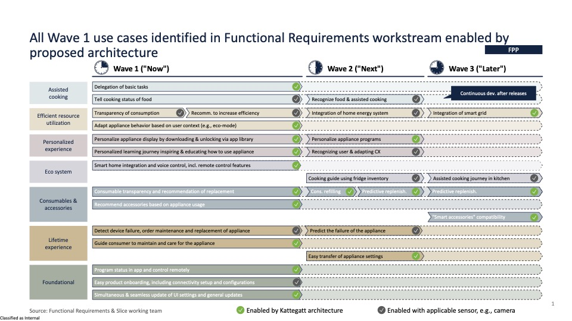
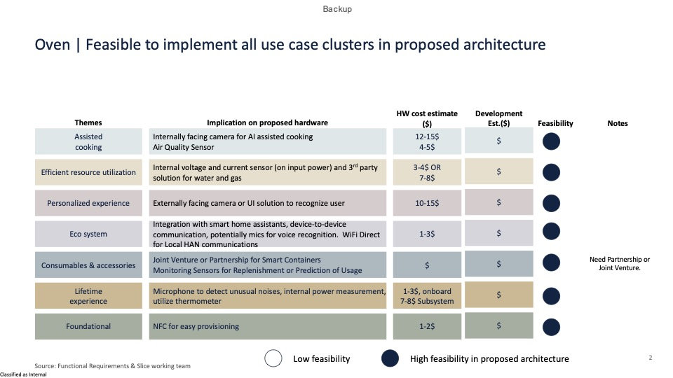
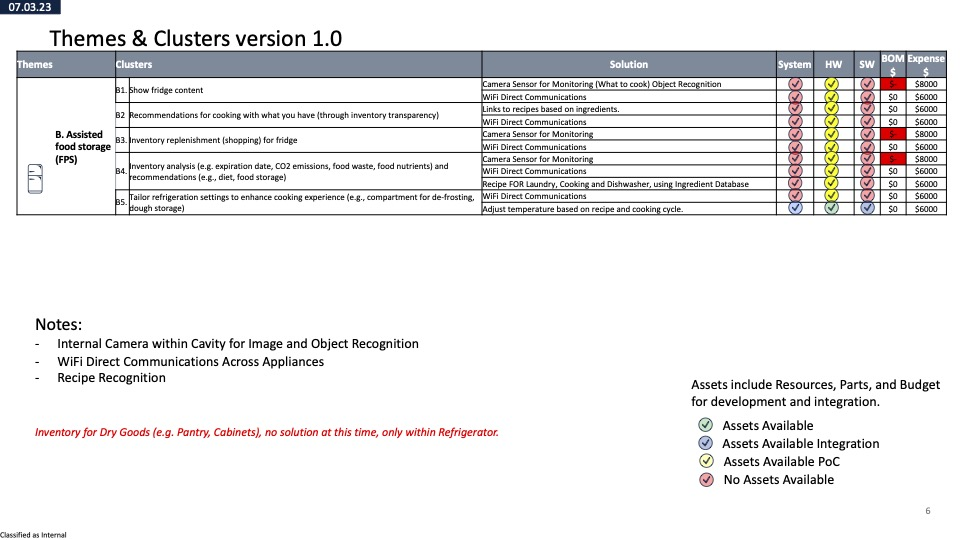
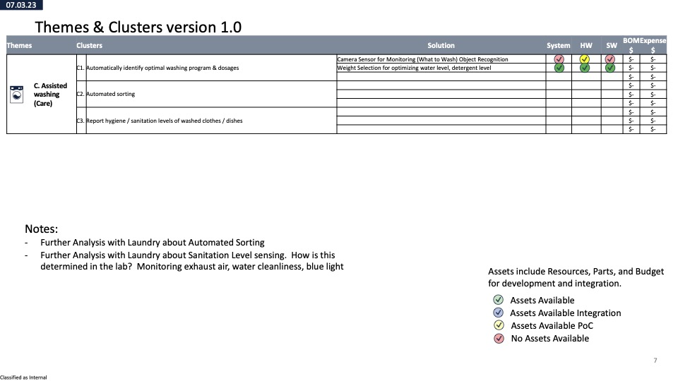
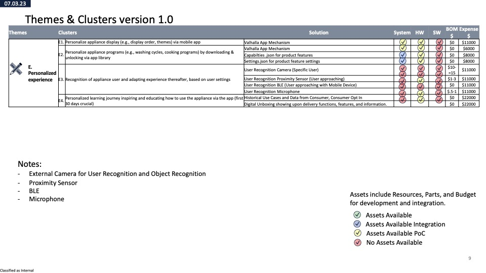
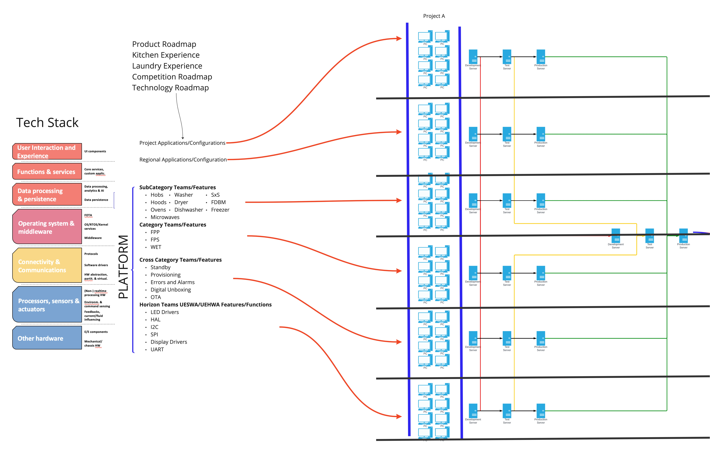
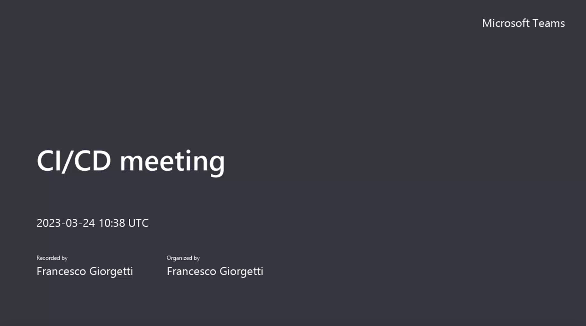

Kattegatt
Table of Contents
- Product Categories and Product Platform
- Cooking
- Laundry
- Refrigeration
- Global Strategy
- One Pager of Initiatives
- Kattegatt Slice/PoC
- Product Description Kattegatt
- Systems Design Kattegatt
- Flexible Architecture
- Use Case Cluster Electrical and Electronics System Design for PoC
- Tech Stack Delivery Product Teams
- Tech Stack Delivery Software Teams
- Continuous Integration and Development
- Outcomes Of Kattegatt
- Valhalla
- Consumer Experience
- Mechanical Architecture
- Electrical Architecture
- Electronics Architecture
Product Categories:


Cooking
| Category |
Platform |
Sub-Category |
| Cooking |
Built In Ovens |
Single |
| Cooking |
Built In Ovens |
Double |
| Cooking |
Built In Ovens |
Combo |
| Cooking |
Built In Ovens |
Dedicated Microwave |
| Cooking |
Free Standing Oven |
Single with Induction |
| Cooking |
Free Standing Oven |
Single with Radiant |
| Cooking |
Free Standing Oven |
Single with Gas |
| Cooking |
Hobs/Cooktop |
Induction |
| Cooking |
Hobs/Cooktop |
Radiant |
| Cooking |
Hobs/Cooktop |
Gas |
| Cooking |
Hoods |
Single |
Laundry
| Category |
Platform |
Sub-Category |
| Laundry |
Washer |
Front Load |
| Laundry |
Washer |
Top Load |
| Laundry |
Dryer |
Single |
| Laundry |
Combo |
Single |
Refrigeration
| Category |
Platform |
Sub-Category |
| Refrigeration |
Side By Side |
Side By Side |
| Refrigeration |
Side By Side |
FDBM |
| Refrigeration |
Side By Side |
Multi Door |
| Refrigeration |
Top Mount |
Bottom Mount |
| Refrigeration |
Freezers |
Ice Chest |
Global Strategy
Strategy to support all regions across all product categories.

- Europe
- North America/Canada
- South America
- Asia

Kattegatt Slice/PoC
Product Description
BIO_ECWS3012AS-OL
Single Built In Oven Product Platform

Control Panel for Built In Oven

System Design

Flexible Architecture

Use Case Cluster Electrical and Electronics System Design for PoC











Tech Stack Delivery Product Teams

Tech Stack Delivery Software Teams

Continuous Integration/Continuous Development Video

Outcomes of Kattegatt
Initiatives:
- Valhalla UI Initiative to continue using the PoC (i.e. EPU = MPU/MCU)
- UDA Initiative to Continue
- UEA/UESWA Initiatives are part of the tech stack and should continue.
- Start a initiative with the Main Control Boards to integrate the inverter/motor control.
What we need from BCG is a plan for the following:
- Way of Working – Agile across the teams.
- Budget to fund initiatives
- UCC aligned to these Initiatives
- Teams with Product Owners, Scrum Masters, contributing to the initiatives.
- Product Suites aligned with the business proposal for profitability OR Strategic Market Objectives
Right Now I see they are validating strategies and initiatives we already have in place, and I want to ensure the outcomes of the work BCG is sustainable for the inititiaves…
Valhalla
Goals:
- Common Consumer Experience
- Common Mechanical Architecture
- Common Electrical Architecture with UDA
- Common Electronics Architecture using UEHWA and UESWA
Roadmap Vision

Consumer Experience
Current Ux Debt Project by Project

Interaction Layers


Modalities and Good/Better/Best

Cross Product Solutions

Mechanical Architecture
Process for Mechanical Constraints

Cooking
Clustering

Envelopes

Assemblies

Laundry Dish
Clustering

Compound Shapes

Envelopes

Refrigeration
Current

Clustering

Envelopes

All Categories
Outcomes - All Categories

Electrical Architecture
Horizon Systems Architecture:
Appliance States and Modes
Appliance modes
- Off Mode
- User Mode (Default Mode)
- Demo Mode
- Sabbath Mode
- Programming Mode
- Diagnostics Mode
Appliance States
- Disconnected State
- Initialization State
- Standby State
- Delay Start State
- Active State
- Error State
Subsystems:
- UI/HMI
- Main Control Board
- Auxiliary Control Boards
- Sensors
- Loads
- Switches
- Harnesses/Connections
Features:
- Temperature
- Standby
- Programming and Reprogramming
- Factory
- Service
- ECM
- Connectivity OTA
- Connectivity
- Provisioning
- Claiming
- Security and Privacy
- Over The Air Update
- Power Loss and Recovery
- Initialization and Configuration
- Operations
- Operands (Start and Cancel)
- Input Power requirements (Globally)
- Reboot
- Restore Factory Default
- Error Codes/Alarms
- Process = Cycle Performance
- Cycles
- Phases
- Sequences/Cycle Design?
- Algorithms
- State Machine
- Cycle Design
- Parameters
- Verification and Validation
- Performance team requirements (tuning product requirements to drive development speed and tools)
- Lab Testing
- Factory Testing and Manual Verification
- Service Testing and Automatic Verification
- Control Settings
- General
- About
- Control Version
- HMI Software Version
- HMI Configuration Version
- NIU Software Version
- NIU Configuration Version
- Control Board Software Version
- Control Board Configuration Version
- Control Board
- Software Update
- Latest Software Version
- Update Software Version, if available
- Yes
- No
- Connectivity
- Wireless Network
- Features
- Smart Grid
- Opt In
- Opt Out
- Data Analytics
- Opt In
- Opt Out
- WiFi
- On/Off
- Status:
- Provisioning
- Deprovisioning
- WiFi Network Connected
- WiFi Signal Strength
- BLE
- On/Off
- BLE Network
- Pair
- Unpair
- Time of Day
- 12 Hour/24 Hour
- Time of Day Manual
- Time of Day Automatic (Connected Appliances Only)
- Audio
- Volume Level
- End of Cycle Tone
- Key Press Tone
- Display & Brightness
- Backlight Brightness
- Display Theme
- Control Lock
- Control Locked
- Control Unlocked
- Calibration:
- Cooking
- Hobs
- Ovens
- Temperature Offset
- Hoods
- Laundry
- Washers
- Dryers
- Dishwashers
- Refrigerators
- Modes:
- Sabbath Mode
- Demo Mode
- Service Mode
- Diagnostics Auto Routine
- Results from Auto Routine
- Error Failure Codes and Descriptions
- System Reboot
- Factory Mode/Verification and Validation Mode
- Diagnostics Manual
- Turn On Loads
- Read Sensors/Switches
- Restore Factory Reset
Unified Data Architecture

Electronics Architecture
UEA - Unified Electronics Hardware Architecture

UESWA - Unified Electronics Software Architecture